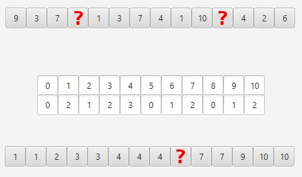

Zadanie 4
Pytanie: Jakie wartości zaznaczone jako czerwony znak zapytania są brakujące w tablicy zliczeń?

Odpowiedzi:
A) 10, 4 - nieposortowana, 6 - posortowana.
B) 10, 4 - nieposortowana, 5 - posortowana.
C) 1, 0 - nieposortowana, 5 - posortowana.
D) 4,10 - nieposortowana, 6 - posortowana.